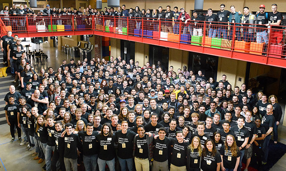
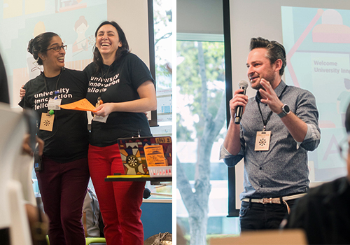
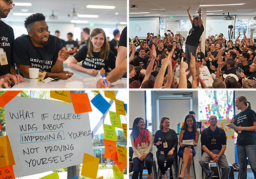
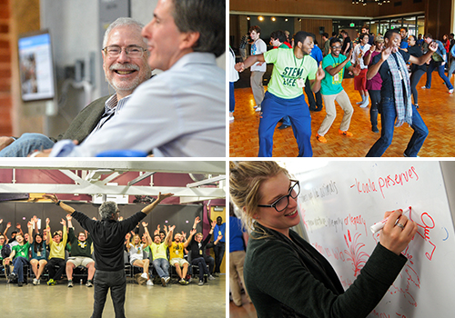
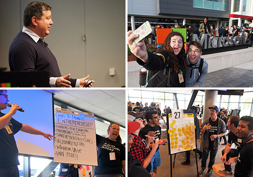
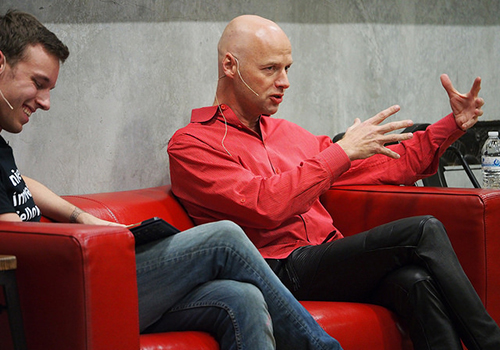

More than 300 University Innovation Fellows and their faculty sponsors spent four days in Silicon Valley learning how to make lasting change in higher education.

Fellows and faculty at Stanford's d.school on March 20, 2016. Photo by Ryan Phillips.
by Laurie Moore
In the third week of March, hundreds of students traveled to Silicon Valley. For many of them, it was spring break. They could have been relaxing on a beach or making up for lost sleep. Instead, they were learning how to create solutions for challenges at their schools and out in the world.
At the University Innovation Fellows Silicon Valley Meetup, more than 300 Fellows and Fellows’ faculty sponsors from 83 universities took part in four packed days of activities. They spent their time learning at Google, Stanford University’s Hasso Plattner Institute of Design (d.school), and Microsoft, and toured several Bay Area companies and organizations. They learned everything from how to create spaces for innovation to how to be effective leaders and supportive followers. All of the activities were focused on giving participants tools, connections and inspiration to make lasting changes back at their home institutions.
Humera Fasihuddin, co-leader of the University Innovation Fellows program, described the inspiration behind the meetup: “As a young college graduate, I saw Silicon Valley as a place where dreams could come true because the community possessed a creative culture, appetite for risk and an entrepreneurial mindset. This event demystifies those components and arms student leaders with tools to lead a movement at their schools.”
After a Thursday night registration, attendees woke up early Friday morning and boarded buses to Google for a full day co-hosted by Frederik Pferdt — head of Innovation and Creativity Programs at Google and co-founder of The Garage — and Fellows program co-leader Leticia Britos Cavagnaro. Pferdt shared his thoughts on the innovation culture at Google and the importance of using a “yes, and” mindset rather than “yes, but.” The “yes, and” mindset allows team members to build on one another’s ideas, while the only opportunity a “yes, but” mindset provides is to add an objection. The first mindset facilitates conversation and creates new ideas while the second shuts them down.

From left, program co-leaders Humera Fasihuddin and Leticia Britos Cavagnaro and Frederik Pferdt. Photos by Ryan Phillips.
The Fellows heard from Tilek Mamutov, project manager of special projects at X (formerly Google X), about “10x” or moonshot thinking. He encouraged them to think big and create a solution 10 times better than what already exists. Later in the day, attendees took part in a mindfulness exercise directed by Google’s Ruchika Sikri and discussed people development at Google with panelists Sikri, Adam Leonard, Emily Triantos, and Regina Getz-Kikuchi.
The students and faculty teams also participated in a series of activities designed to promote moonshot thinking. They stepped through the design thinking methodology, learning how to brainstorm as many solutions as possible and how to prototype and test their ideas using inexpensive materials.
“I loved the idea of having a 10x mindset at Google because it made us think big,” said Zack Jones, a Fellow from the University of Delaware. “We tackled problems that were huge and started thinking of small steps to conquer them.”

Top left: students in a design thinking challenge; top right: Molly Wasko wins the "Rock Paper Scissors" tournament; bottom left: a brainstorming prompt; bottom right: Fellow Bre Przestrzelski interviews panelists on people development at Google.
During the day at Google, participants took part in several exercises to help them empathize with one another, let go of their assumptions, and create lasting bonds with teammates. In addition to preparing the students for the activities to come, these exercises are are also ones that the students can use back at their schools as warm-ups for events with their fellow students. In one exercise, they participated in a tournament-style “Rock Paper Scissors” competition with a twist: each loser became the winner’s biggest cheerleader. The end result was two competitors each backed by half of the entire room cheering their names, and the winner was Molly Wasko, a faculty sponsor from the University of Alabama.
“The life lesson there is to be flexible,” wrote DJ Jeffries, a Fellow from Southern Illinois University Carbondale, in an article about his day at Google. “Realize that your idea might not always be the winning idea but if you cheer for the person who does win, you win.”
The Fellows and their faculty sponsors spent Saturday at Stanford’s d.school taking part in a circuit of activities that allowed them to explore different ways of learning. They discovered the connections between leadership and movement with Stanford contemporary dance instructor Aleta Hayes, explored how the d.school uses physical space to promote specific learning outcomes and explored how learning can happen everywhere, beyond the walls of the classroom.
Later in the day, the participants heard from entrepreneur and educator Steve Blank, who was interviewed by Epicenter director and Stanford Engineering professor Tom Byers. Blank, “the Obi Wan Kenobi of Innovation” as one Fellow referred to him on Twitter, spoke about the need for students to learn an entrepreneurial mindset and shared details about the new “Hacking for Defense” class he started teaching this quarter at Stanford.
Participants also took part in a workshop on Edward de Bono’s six thinking hats system for group discussion, a session on visual thinking taught by high school students from the Nueva School, a workshop on how to design their own pop-up classes, and an improvisation class with d.school lecturer Dan Klein.

Top left: Steve Blank chats with Tom Byers; top right: Fellows show off their leadership moves; bottom left: Dan Klein leads an improv workshop; bottom right: Fellows try on different different thinking hats.
In the evening, keynote speaker Peter Sims — an entrepreneur, author and social innovator — spoke to the Fellows about social change in the world today. During his talk, he mentioned GoldieBlox, a company that creates toys and games to help girls develop early interest in engineering and problem-solving confidence. This mention triggered an enthusiastic response from Nada Saghir, a Fellow from Lawrence Technological University, who was sitting in the front row. Nada was invited on stage to share details about the company with the audience. Sims was so taken by her enthusiasm that he offered to connect her with company founder Debbie Sterling for a potential internship.
Saghir shared her thoughts on this unique experience: “The environment created by the UIF program provided me the confidence and courage to talk about my passion in front of over 300 people. One essay in my UIF application was about Debbie Sterling’s impact on my lifelong passion to encourage girls into STEM, so it was a surreal experience to discuss my favorite company in front of like-minded students. I was unapologetically passionate about my love for GoldieBlox on stage, and my interaction with Peter proved to me that it’s okay to be so.”
On Sunday morning, the last full day of the meetup, the group headed to Microsoft, a visit that had been left a surprise until the buses pulled up at Microsoft Silicon Valley headquarters in Mountain View. Attendees heard about the connections between culture, innovation and leadership from Jeff Ramos, Senior Director of The Microsoft Garage, and about early-career leadership perspectives from Rolly Seth of Microsoft and the World Economic Forum. Christine Matheney, Technical Evangelist at Microsoft, encouraged Fellows to constantly ask themselves “why do we do it that way?” and T. K. Rengarajan, Corporate Vice President of Microsoft Technology and Research Global, shared a big vision for changing the world.
“Tapping into the energy, talent and creativity of the 300 Fellows was an exhilarating experience,” said Ramos. “It was sincerely a pleasure working with talented students who clearly will make a mark on the world through their work.”

Top left: Jeff Ramos speaks to the Fellows; top right: selfies at Microsoft; bottom left: Fellows present ideas at the unconference; bottom right: brainstorming new ideas to impact education.
After hearing from Microsoft leaders, Leticia Britos Cavagnaro kicked off an unconference, which encourages a casual idea exchange around participant prompts and questions. Questions that Fellows and their faculty posed included “how might we bring innovation and design thinking to the research setting?” and “how can we integrate tools for discovering your passion into all levels of education?” At the end of the unconference, groups that had formed around the questions pitched their ideas to the whole group.
“Too many conferences are about students, yet students don’t get to participate or they don’t have a voice,” said Britos Cavagnaro. “The UIF Meetup is for students and by students. The unconference is a great format to allow them to set the agenda and surface those issues that are important to them.”
The group traveled to the d.school for the rest of the afternoon, where they took part in a negotiation workshop with David Johnson of the Stanford Law School. Fellows learned how to have better conversations with stakeholders at their schools by taking part in a role-playing experience to understand the perspectives of others.
Afterwards, the entire group of Fellows and faculty gathered in the d.school atrium for a fireside chat with Sebastian Thrun, founder of Google X, and CEO and co-founder of Udacity. Interviewed by Fellow Ryan Phillips, Thrun advised the group to make learning a part of their daily lives. He told the Fellows that fear is the culprit of lack of innovation, and that true leaders have the guts to do the right thing.

Sebastian Thrun, interviewed by Ryan Phillips, shares his advice with the attendees.
As a colorful and uplifting end to three incredible days, Fellows were asked to write their learnings from the meetup on construction paper, and then to fold that paper into airplanes. On the count of three, the attendees threw their airplanes up into the open space of the the d.school atrium. Britos Cavagnaro collected a few of the airplanes and read the statements to the group, including “start with love,” “inspiration requires action,” “think like a child,” and “innovation cannot be ordered — we can only create a space that allows it to happen.”
On Monday, many of the students took part in learning journeys to innovative Bay Area companies and organizations before traveling back to their schools. Groups spent the morning visiting Microsoft, Autodesk, co.lab, Nearpod, Stanford Technology Ventures Program, Stanford’s Center for Design Research, Stanford’s Center for Entrepreneurial Studies, SAP, LucasFilm, Draper University and StartX.
Just as the Fellows community believes that students should be co-designers of their education, students were also co-designers of the entire Silicon Valley Meetup. Along with program staff, 18 Fellows facilitated sessions, assisted with event logistics, and presented their stories to the attendees throughout the event. The Fellows who co-led this event were Chris Ashley, Timothy Moore and Jack O’Neill of James Madison University; Francis Atore of NXP Semiconductors and Texas Tech University ’14; Robin Bonatesta of Kent State University; Corey Brugh of the Colorado School of Mines; Bradley Dice of William Jewell College; Magann Dykema and Bradley Turner of Michigan Technological University; Adrien Feudjio of Morgan State University; Nadia Gathers of CODE2040 and Converse College '15; Benjamin Matthews of the University of Virginia; Ryan Phillips of Microsoft and the University of Oklahoma '15; Bre Przestrzelski of Clemson University; Valerie Sherry of the University of Maryland; Tanner Wheadon of Utah Valley University; Daricia Wilkinson of the University of the Virgin Islands; and Alan Xia of Kettering University.
“This UIF meetup was hands-down the very best academic learning experience I have ever participated in,” said Ken Bloemer, a Fellows faculty sponsor and Director of the Visioneering Center at the University of Dayton. Bloemer attended the meetup along with Fellows from his school who were funded by the Kern Entrepreneurial Engineering Network (KEEN). “Daniela, Reid, Cameron, Suzy and Devin are pumped up and now well-equipped to go back to campus and drive significant change.”
“This was a transforming weekend,” said Aaron Phu, a Fellow at Saint Louis University. “It was great to meet and learn from other Fellows as well as the speakers and the venues in Silicon Valley. One key takeaway is to be passionate about what you're doing. It is the engine to drive you towards your goals.”
“Energized by what they’ve learned, these Fellows have already hit the ground just a week after the meetup, holding hackathons, building new spaces and meeting with campus leaders,” said Humera Fasihuddin. “We’re excited to see the continued impact they will have on campus and in their communities.”
Photos by Laurie Moore, Ryan Phillips and Alan Xia.
View photos, videos and resources from the Meetup at universityinnovationfellows.org/materials-2016-silicon-valley-meetup